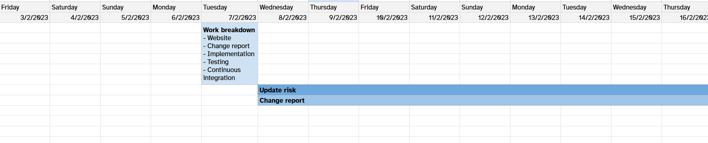
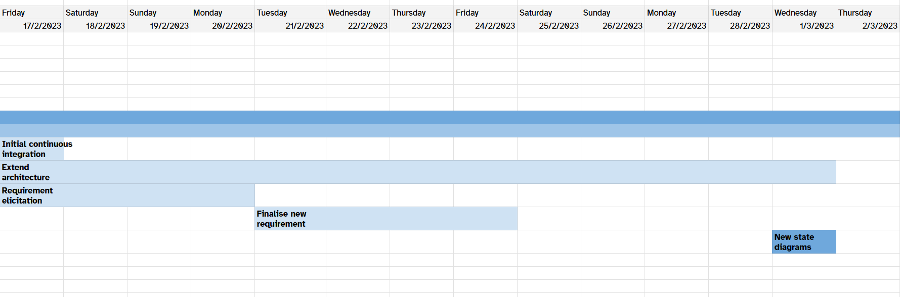

Assessment 1 Gantt Charts
Week commencing 14/11/2022

This was our first gantt chart. It started in the second week of the project and ended once we had our client meeting. We felt this was a good time frame as this was our first big milestone, and we had to complete user requirements and questions beforehand. This plan was achievable and we most of the deliverables seen. We did not start the risk register as we had not thought much about. However, looking back on our process, it would have been beneficial to create this plan earlier as we made it mid-week.
Week commencing 21/11/2022

This week we decided it was more beneficial to make a full representation of our full project in our gantt chart. This plan is likely to change as we are unsure of times and completion dates. We have included some dependencies, i.e. we cannot start the implementation without the architectural diagrams. By this point we had our client meeting and we had finished the user requirements, after some guidance. Not all tasks have been assigned to a team member as of yet as the tasks have not been fully broken down. This week we made this plan quickly which was very beneficial. However, we need the plan to be more detailed.
Week commencing 28/11/2022

gantt chart followed until 16/01/2023
After a QnA session we realised it was beneficial to start the implementation even earlier than expected. This makes our project more parallel; implementation is less dependent on architecture. At this point we have still split ourselves into smaller teams to make the work more manageable. However, during in-person meeting we tend to work on tasks together instead. When we are away for the holiday period we expect to work more in our teams.
Week commencing 05/12/2022
It was harder to plan this weeks workload as the team is now remote due to the holiday period. It was up to the individual groups to decide their course of action. The plan stayed the roughly same as in these weeks there is just work to carry on with. The implementation team is nearer the beginning of their set of tasks. This means that the work that they plan to do this week is slightly more ambiguous. They hope to be able to get the design of the game more concrete and then start to get some of the simple functionalities working.
Week commencing 12/12/2022
This week was focused on the implementation team as they started to implement some basic features. To do this they had their own meetings to discuss their individual tasks. The plan for this week is to make a start on more architectural diagrams and finalise the requirement tables. This is to make sure that the implementation is as clear as possible, and to help with the documentation.
Week commencing 19/12/2022
As this week was Christmas we don't not plan to do any work on this project. We believe this won't affect our project much as we are mostly up to date with our plan.
Week commencing 26/12/2022
We plan to do some work this week but we haven't structured it much as everyone still has holiday plans. This week is more for individual work and catch-up rather than working within our smaller teams. The class diagram should have been completed but it is still in its initial stages, and needs more refinement. This will be possible once the implementation team have familiarised themselves with LibGDX and know the best and easiest ways to organise the code.
Week commencing 02/01/2022
At this point the architectural diagrams should be all completed, however, we are behind schedule. The class diagrams need to be properly formatted and finalised but are otherwise completed. The CRC cards haven't been grouped into control styles, and we currently only have four state diagrams. It is very important we finish the diagrams by this week. To help with this we need to communicate with the implementation team more.
Week commencing 09/01/2022
This was exam week so we did not plan to meet over this period. By the end of this week we realised we should have met up at least once, even remotely. This would have helped communication between the inner teams.
Week commencing 16/01/2022

On the 16th of January we had a whole team meeting as term had re-started. We realised that the implementation was behind schedule and this needed prioritising. The architecture is being finalised and the write-up has now started. We need to iterate the CRC cards again and check that the code matches the diagrams. By the end of this all the write-ups were well underway, the crc cards were iterated and grouped, and the state diagrams finalised. The class diagrams were refined once after discussions with the implementation team about game screens and libGDX's own classes.
Week commencing 23/01/2022
This weeks work mostly involved big fixes and checking the brief requirements. We found a few bugs with the music and screen layering. Once these were fixed we collated all the documents together.
Assessment 2 Gantt Charts
Week commencing 13/02/23

We began this week with a team meeting on the Tuesday, to establish what work we needed to do, and who needed to do it. Once this was decided, we first carried out another risk assessment, and updated to document accordingly. During this, we began making the change report document.
Week commencing 20/02/23

With the risk assessment done, we continued with the writeup of it during this week. At this point, we also redefined the project's requirements, contacting the customer again to ensure they were satisfied. Finally, we began to assess the previous team's architecture, and update their diagrams where necessary.
Week commencing
During this week, we began parts of the actual implementation. This included refactoring and commenting the code to make it clearer, creating tests, and creating more assets to be used.
Assesment 2 credits: University of York: Olivia Betts https://github.com/shella688 (ob903@york.ac.uk), Muaz Waqas https://github.com/MWaq2803(mw2283@york.ac.uk), Zac Bhumgara https://github.com/Bhumgara (zdb502@york.ac.uk), Nursyarmila Ahmad Shukri https://github.com/syarmilashd (nsas506@york.ac.uk), Oliver Northwood https://github.com/Volferno (on589@york.ac.uk), Teddy Seddon https://github.com/13Bear(ts1583@york.ac.uk) Cameron Duncan-Johal https://github.com/camerondj02(cdj515@york.ac.uk)